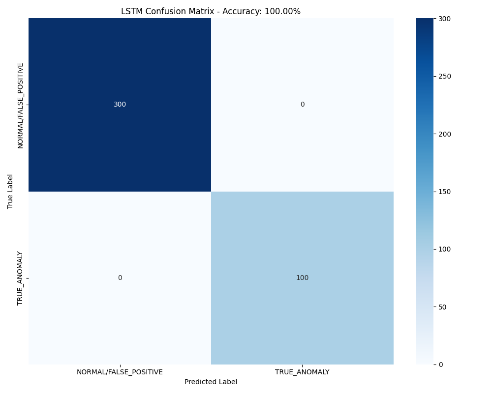
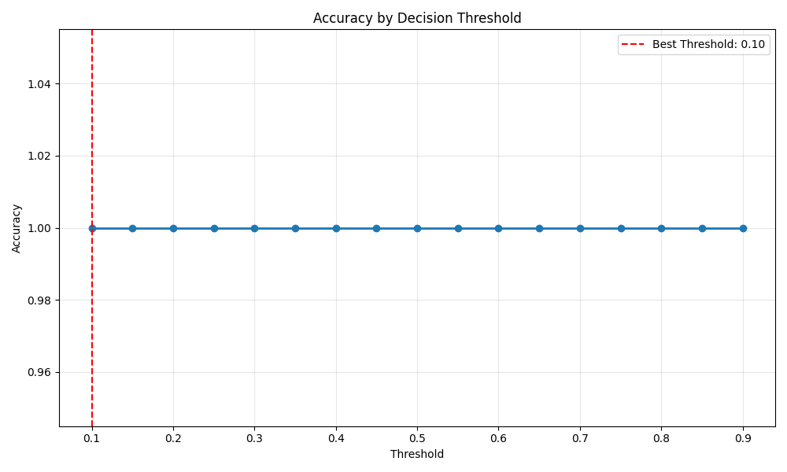
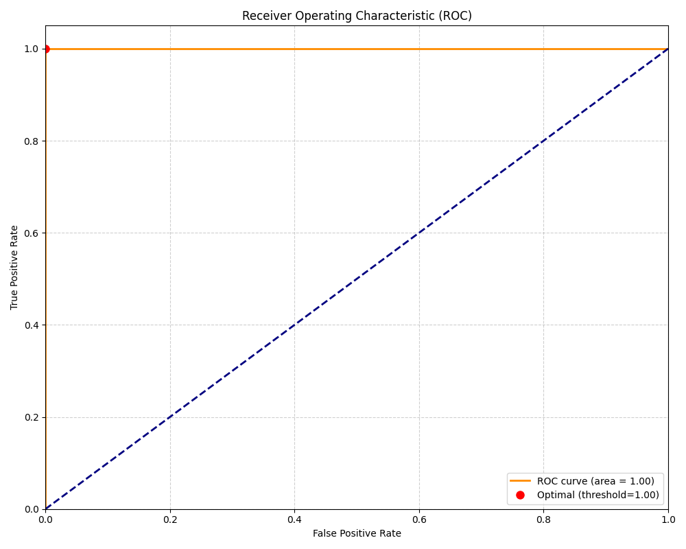
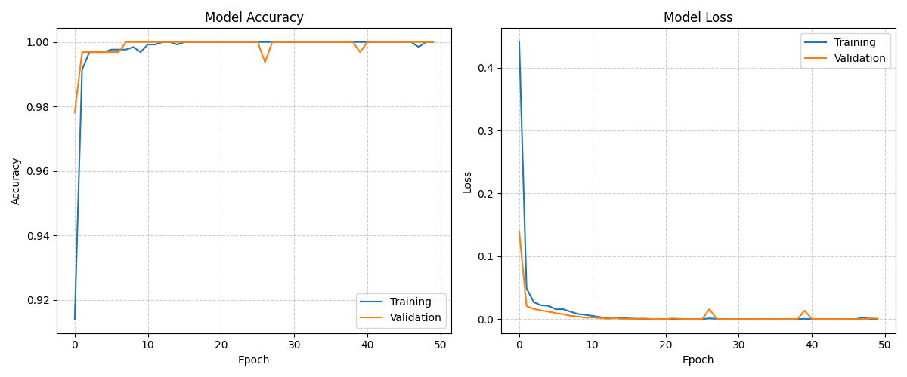
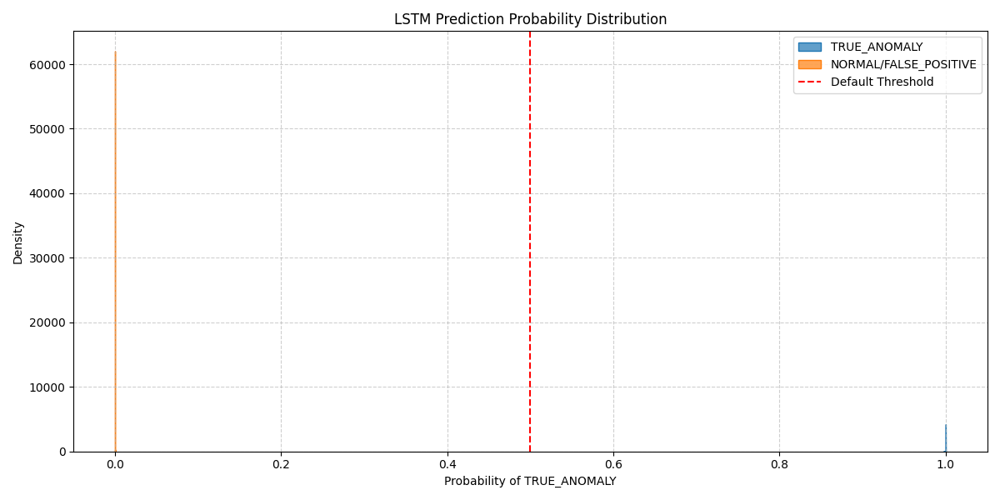

LSTM Classifier for Compressor Anomaly Detection
Generated on: 2025-03-10 13:16:56
Dataset: Compressor Monitoring Dataset (2000 records)
Overall Performance
Accuracy: 100.00%
Class Metrics
| Metric |
True Anomaly |
Normal/False Positive |
| Precision |
100.00% |
100.00% |
| Recall |
100.00% |
100.00% |
| F1 Score |
100.00% |
100.00% |
Confusion Matrix

Threshold Optimization
Default Threshold (0.5) Accuracy: 100.00%
Optimized Threshold (0.50) Accuracy: 100.00%
Accuracy Improvement: 0.00%
Threshold Tuning

ROC Curve

Additional Performance Metrics
| Metric |
Value |
Description |
| ROC AUC |
1.0000 |
Area under ROC curve - model's ability to discriminate between classes |
| MAE |
0.0000 |
Mean Absolute Error - average magnitude of errors |
| MSE |
0.0000 |
Mean Squared Error - average squared differences |
| RMSE |
0.0000 |
Root Mean Squared Error - standard deviation of prediction errors |
Training History

Probability Distribution

Model Architecture
LSTM(64, return_sequences=True)
Dropout(0.3)
LSTM(32)
Dropout(0.2)
Dense(16, activation='relu')
Dense(1, activation='sigmoid')
Features Used
- discharge_temp_true
- vibration_true
- discharge_pressure_true
- suction_pressure_true
- bearing_temp_true
- motor_speed_true
- ambient_temperature
- humidity
- atmospheric_pressure
- temp_deviation
- vibration_deviation
- temp_vib_ratio
- temp_ambient_delta
- pressure_ratio
- bearing_status